library(tidyverse)AH-ANTQ103: Workshop 2
Spring 2024
Introduction
In this workshop, we will expand on some of the basic functions, use tidyverse more and introduce some archaeology specific functions. It will follow the flow of a more typical data analysis workflow. We will work with data about lithics from the Jerimalai rockshelter in East-Timor. This workshop has been inspired by the ‘tidyverse for archaeologists’ workshop by Professor Ben Marwick.
Some of the code will be evaluated here, but some will not so please copy and paste the code into your own script and run it there.
Load the tidyverse package.
Data
This data is coming from an URL, and it is an excel file. We unfortunately cannot use tidyverse to read excel files, so we will use the rio package.
Install the rio package.
install.packages("rio")library(rio)Load the data using import.
data <- import("https://bit.ly/j_data_xlsx", setclass = "tbl_df")Let’s have a look at the data.
View(data)
summary(data)nrow(data)[1] 9752ncol(data)[1] 48names(data) [1] "Site" "Square" "Spit" "Group" "Artno"
[6] "Material" "Colour" "Weight" "Length" "Artclas"
[11] "Cortex" "Cortype" "Initiat" "Breaks" "Noseg"
[16] "Platwid" "Plat" "Focal" "Overhang" "NoDS"
[21] "NoPS" "Rtch" "Plat_2" "Focal_2" "Overhang_2"
[26] "NoDS_2" "NoPS_2" "Rtch_2" "RetOri" "Retype"
[31] "Retloc" "Retlen" "Retdep" "Portion" "Heat"
[36] "EdgeDam" "Weathering" "Corerot" "RetScNo" "Term"
[41] "Janus" "Recycled" "Redirect" "Width" "Thick"
[46] "Platthic" "area" "elongation"head(data)# A tibble: 6 × 48
Site Square Spit Group Artno Material Colour Weight Length Artclas Cortex
<chr> <chr> <dbl> <dbl> <dbl> <chr> <chr> <dbl> <dbl> <chr> <dbl>
1 J B 1 1 1 Chert Brown 1.83 22.0 Flake 0
2 J B 1 1 2 Chert Yellow 0.61 14.6 RetF 0
3 J B 1 1 3 Chert Dk Grey 3.81 29.6 Core 0
4 J B 1 1 4 Chert Grey 0.13 5.83 RetFrag 0
5 J B 1 1 5 Chert Grey 0.05 7.07 Flake 0
6 J B 1 1 6 Chert Lt Brown 0.58 11.1 Core NA
# ℹ 37 more variables: Cortype <chr>, Initiat <chr>, Breaks <chr>, Noseg <dbl>,
# Platwid <dbl>, Plat <chr>, Focal <lgl>, Overhang <chr>, NoDS <dbl>,
# NoPS <dbl>, Rtch <chr>, Plat_2 <chr>, Focal_2 <lgl>, Overhang_2 <chr>,
# NoDS_2 <dbl>, NoPS_2 <dbl>, Rtch_2 <chr>, RetOri <chr>, Retype <chr>,
# Retloc <chr>, Retlen <dbl>, Retdep <dbl>, Portion <chr>, Heat <dbl>,
# EdgeDam <dbl>, Weathering <dbl>, Corerot <dbl>, RetScNo <dbl>, Term <chr>,
# Janus <lgl>, Recycled <lgl>, Redirect <lgl>, Width <dbl>, Thick <dbl>, …We will select the Square, Spit and Weight columns. Note that we can select multiple columns in one go using the comma.
data %>%
select(Square, Spit, Weight)Plotting
We now want to get into plotting our data. For this we are only interested in the Square, Spit, Material, Weight and Thick columns.
plotting_data <- data %>%
select(Square, Spit, Material, Weight, Thick)
plotting_data# A tibble: 9,752 × 5
Square Spit Material Weight Thick
<chr> <dbl> <chr> <dbl> <dbl>
1 B 1 Chert 1.83 3.34
2 B 1 Chert 0.61 2.74
3 B 1 Chert 3.81 7.25
4 B 1 Chert 0.13 2.05
5 B 1 Chert 0.05 1.13
6 B 1 Chert 0.58 4.79
7 B 1 Chert 0.03 1.16
8 B 1 Chert 0.02 1.09
9 B 1 Chert 0.21 3.91
10 B 1 Chert 0.25 3.13
# ℹ 9,742 more rowsWe can now create a histogram of the Weight column. This will show how many artefacts have a certain weight. We can do this using the ggplot() function. This function takes a tibble, and creates a plot. ggplot works with layers. We can add these layers with a + sign. The base command is ggplot(). This creates a white canvas, and you can add information that is passed to the layers.
ggplot(plotting_data)
As we want to make a histogram, we only need to specify the x axis.
ggplot(plotting_data, aes(x = Weight))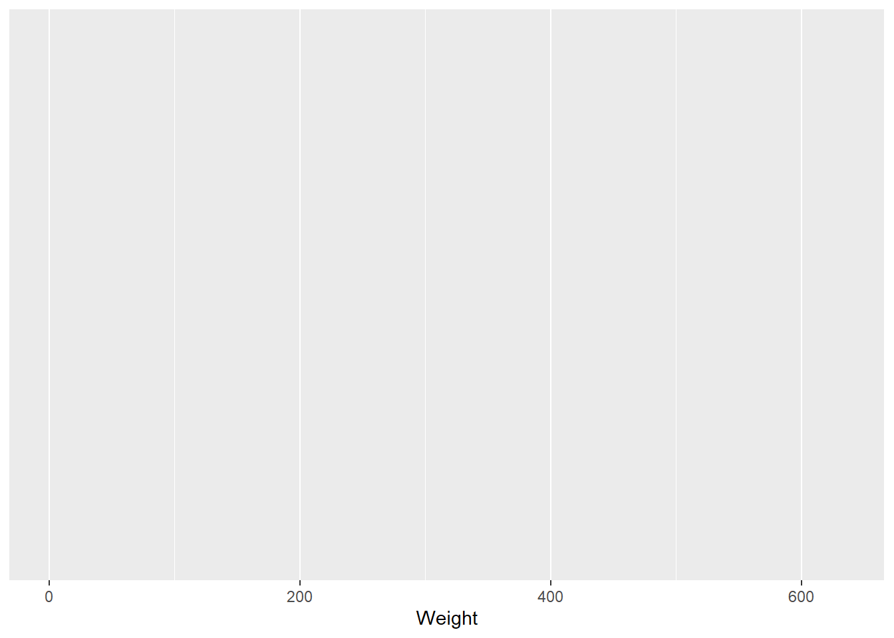
Now we need to add a layer that displays the data. These layers are known as geoms. There are many different geoms, but we want to create a histogram, so we will use the geom_histogram() function.
ggplot(plotting_data, aes(x = Weight)) +
geom_histogram()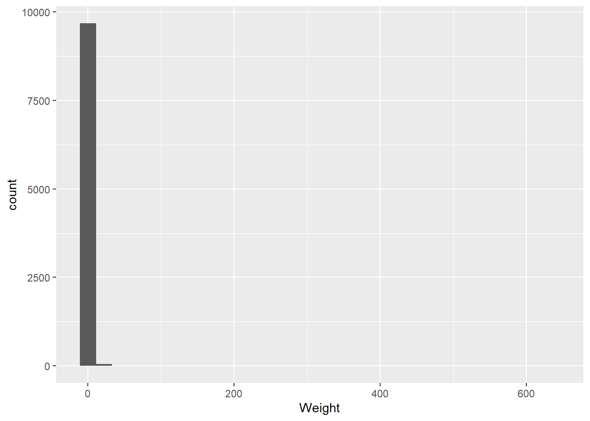
There are some weights that are very large, but most are close to zero. If we change the x axis scale to a logaritmic scale, we can see the distribution better. We do this by adding the scale_x_log10() layer.
A logarithm is a mathematical function that increases slowly at first, and then faster and faster. This is useful for data that has a large range, as it compresses the data and makes it easier to see the distribution. This specific logarithm is the base 10 logarithm, which means that 10 is raised to the power of the number on the x axis. For example, 10^2 = 100, so the number 2 would be at the position 100 on the x axis.
logs_tibble <- tibble(x = c(10^0, 10^1, 10^2, 10^3, 10^4), y = c("10^0", "10^1", "10^2", "10^3", "10^4"), z = log10(x))
logs_tibble# A tibble: 5 × 3
x y z
<dbl> <chr> <dbl>
1 1 10^0 0
2 10 10^1 1
3 100 10^2 2
4 1000 10^3 3
5 10000 10^4 4ggplot(plotting_data, aes(x = Weight)) +
geom_histogram() +
scale_x_log10()We can also change the theme of the plot. There are many themes available, but we will use the theme_bw() theme.
ggplot(plotting_data, aes(x = Weight)) +
geom_histogram() +
scale_x_log10() +
theme_bw()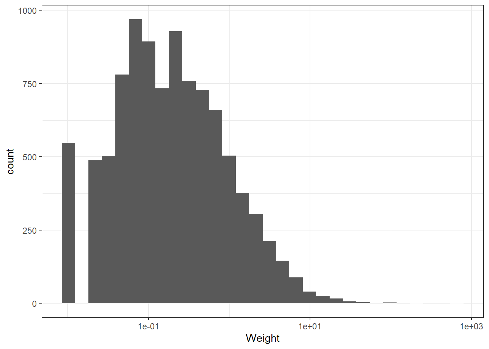
We now only want to keep rows that have the “A” value for the Square column. We can do this using the filter() function. Keep in mind that “A” is a string, so we need to use quotation marks and two equal signs.
plotting_data %>%
filter(Square == "A")# A tibble: 4,436 × 5
Square Spit Material Weight Thick
<chr> <dbl> <chr> <dbl> <dbl>
1 A 1 Chert 1.74 4.37
2 A 1 Chert 1.64 4.09
3 A 1 Obsidian 0.12 1.41
4 A 1 Chert 2.12 5.96
5 A 1 Chert 2.25 7.62
6 A 1 Chert 4.88 8.97
7 A 1 Chert 8.95 16.0
8 A 1 Chert 3.02 8.15
9 A 1 Chert 2.71 6.44
10 A 1 Chert 1.31 5.84
# ℹ 4,426 more rowsNow, from these rows we only want light objects, lets say with a Weight less than 10. We can do this by adding another filter.
plotting_data %>%
filter(Square == "A") %>%
filter(Weight < 10)# A tibble: 4,416 × 5
Square Spit Material Weight Thick
<chr> <dbl> <chr> <dbl> <dbl>
1 A 1 Chert 1.74 4.37
2 A 1 Chert 1.64 4.09
3 A 1 Obsidian 0.12 1.41
4 A 1 Chert 2.12 5.96
5 A 1 Chert 2.25 7.62
6 A 1 Chert 4.88 8.97
7 A 1 Chert 8.95 16.0
8 A 1 Chert 3.02 8.15
9 A 1 Chert 2.71 6.44
10 A 1 Chert 1.31 5.84
# ℹ 4,406 more rowsAnd a thickness between 0.2 and 20. We can either do this by adding two filters, or by using the between() function. Note that there is an important difference between > and >=, and < and <=.
plotting_data %>%
filter(Square == "A") %>%
filter(Weight < 10) %>%
filter(Thick > 0.2) %>%
filter(Thick < 20)# A tibble: 4,390 × 5
Square Spit Material Weight Thick
<chr> <dbl> <chr> <dbl> <dbl>
1 A 1 Chert 1.74 4.37
2 A 1 Chert 1.64 4.09
3 A 1 Obsidian 0.12 1.41
4 A 1 Chert 2.12 5.96
5 A 1 Chert 2.25 7.62
6 A 1 Chert 4.88 8.97
7 A 1 Chert 8.95 16.0
8 A 1 Chert 3.02 8.15
9 A 1 Chert 2.71 6.44
10 A 1 Chert 1.31 5.84
# ℹ 4,380 more rowsplotting_data %>%
filter(Square == "A") %>%
filter(Weight < 10) %>%
filter(between(Thick, 0.2, 20))# A tibble: 4,392 × 5
Square Spit Material Weight Thick
<chr> <dbl> <chr> <dbl> <dbl>
1 A 1 Chert 1.74 4.37
2 A 1 Chert 1.64 4.09
3 A 1 Obsidian 0.12 1.41
4 A 1 Chert 2.12 5.96
5 A 1 Chert 2.25 7.62
6 A 1 Chert 4.88 8.97
7 A 1 Chert 8.95 16.0
8 A 1 Chert 3.02 8.15
9 A 1 Chert 2.71 6.44
10 A 1 Chert 1.31 5.84
# ℹ 4,382 more rowsAlternatively, you can combine them in one filter function.
plotting_data %>%
filter(Square == "A" & Weight < 10 & between(Thick, 0.2, 20))# A tibble: 4,392 × 5
Square Spit Material Weight Thick
<chr> <dbl> <chr> <dbl> <dbl>
1 A 1 Chert 1.74 4.37
2 A 1 Chert 1.64 4.09
3 A 1 Obsidian 0.12 1.41
4 A 1 Chert 2.12 5.96
5 A 1 Chert 2.25 7.62
6 A 1 Chert 4.88 8.97
7 A 1 Chert 8.95 16.0
8 A 1 Chert 3.02 8.15
9 A 1 Chert 2.71 6.44
10 A 1 Chert 1.31 5.84
# ℹ 4,382 more rowsWe also don’t want rows that have NA values in the Material column.
plotting_data %>%
filter(Square == "A") %>%
filter(Weight < 10) %>%
filter(between(Thick, 0.2, 20)) %>%
drop_na(Material)# A tibble: 4,392 × 5
Square Spit Material Weight Thick
<chr> <dbl> <chr> <dbl> <dbl>
1 A 1 Chert 1.74 4.37
2 A 1 Chert 1.64 4.09
3 A 1 Obsidian 0.12 1.41
4 A 1 Chert 2.12 5.96
5 A 1 Chert 2.25 7.62
6 A 1 Chert 4.88 8.97
7 A 1 Chert 8.95 16.0
8 A 1 Chert 3.02 8.15
9 A 1 Chert 2.71 6.44
10 A 1 Chert 1.31 5.84
# ℹ 4,382 more rowsWe now want to make a scatterplot of the Weight and Thick columns.
new_plotting_data <- plotting_data %>%
filter(Square == "A") %>%
filter(Weight < 10) %>%
filter(between(Thick, 0.2, 20)) %>%
drop_na(Material)Create the empty plot.
ggplot(new_plotting_data, aes(x = Weight, y = Thick))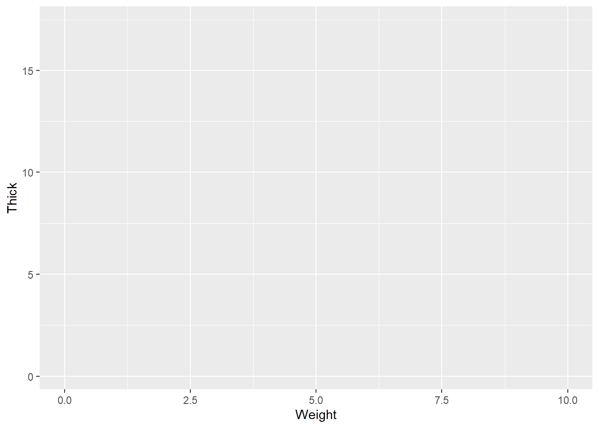
Add the points layer.
ggplot(new_plotting_data, aes(x = Weight, y = Thick)) +
geom_point()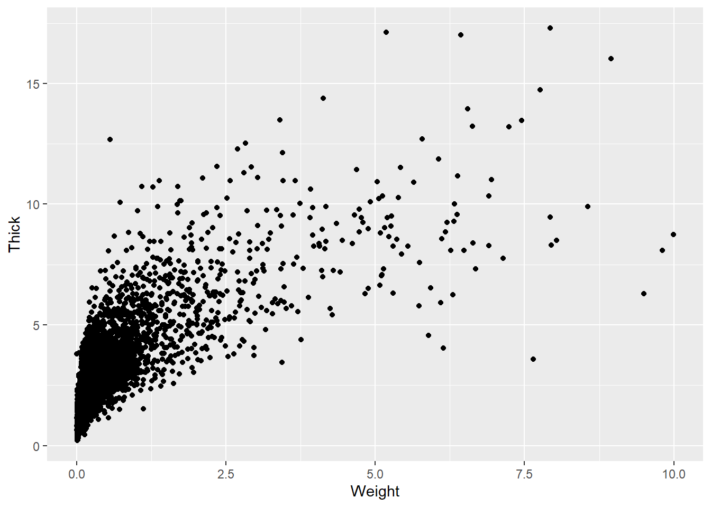
It may again be useful to change the x axis to a logaritmic scale.
ggplot(new_plotting_data, aes(x = Weight, y = Thick)) +
geom_point() +
scale_x_log10()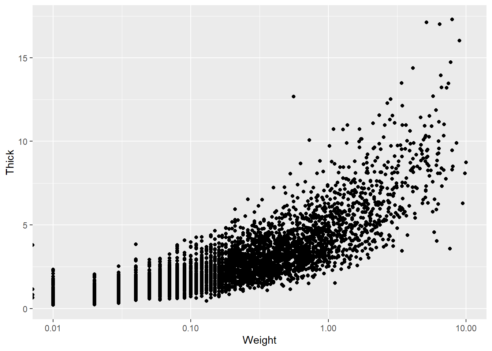
We can also do the same for the y axis.
ggplot(new_plotting_data, aes(x = Weight, y = Thick)) +
geom_point() +
scale_x_log10() +
scale_y_log10()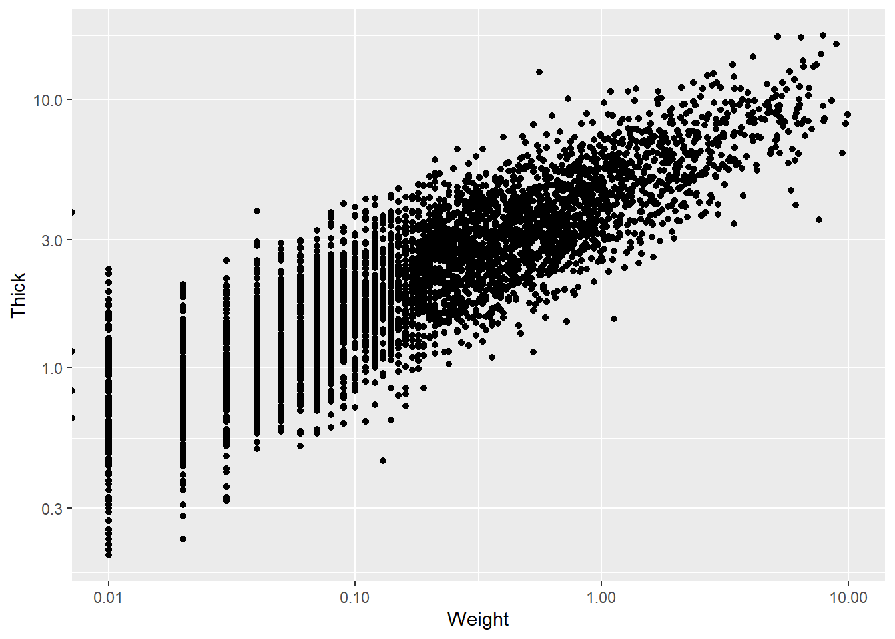
We now set the theme, as well as changing the axis labels.
ggplot(new_plotting_data, aes(x = Weight, y = Thick)) +
geom_point() +
scale_x_log10() +
scale_y_log10() +
theme_bw() +
labs(x = "Weight (g)", y = "Thickness (mm)")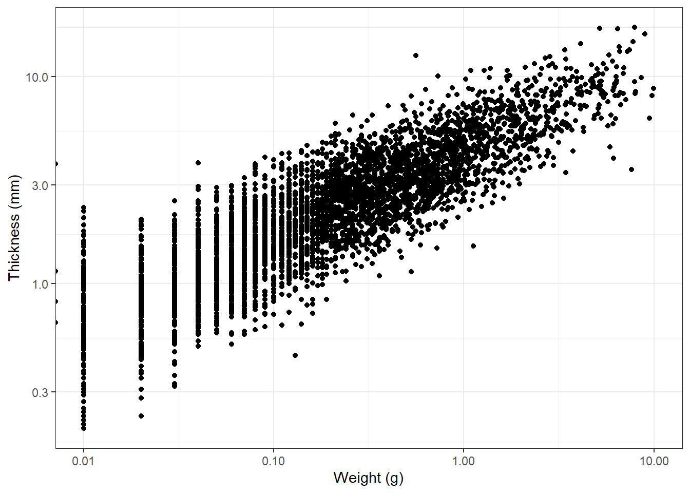
We can also add a colour to the points based on the material the object is made of. We do this by adding the colour = Material argument to the aes() function.
ggplot(new_plotting_data, aes(x = Weight, y = Thick, colour = Material)) +
geom_point() +
scale_x_log10() +
scale_y_log10() +
theme_bw() +
labs(x = "Weight (g)", y = "Thickness (mm)")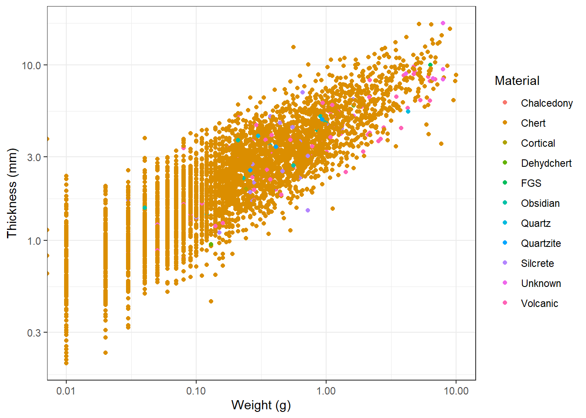
We can change the position of the legend using the theme() function. We need to specify the x and y coordinates of the legend. This uses a coordinate system between 0 and 1, so 0.5 is in the middle.
ggplot(new_plotting_data, aes(x = Weight, y = Thick, colour = Material)) +
geom_point() +
scale_x_log10() +
scale_y_log10() +
theme_bw() +
labs(x = "Weight (g)", y = "Thickness (mm)") +
theme(legend.position = c(0.85, 0.3))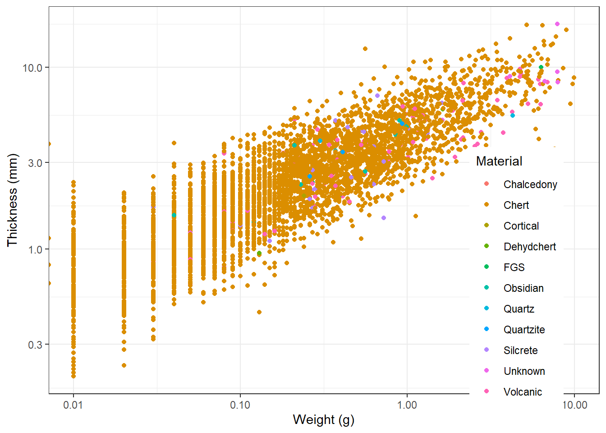
Our goal now is to make a boxplot of the plat_area column, grouped by the Material column. Lets get the data first. We need to create the plat_area column first.
plat_area_data <- data %>%
mutate(plat_area = Platwid * Platthic)Now we only keep materials that have more than 5 objects and remove NA values.
plat_area_data <- plat_area_data %>%
group_by(Material) %>%
filter(n() > 5) %>%
drop_na(Material)Now create the plot using the geom_boxplot() function. We leave the code for a homework assignment.
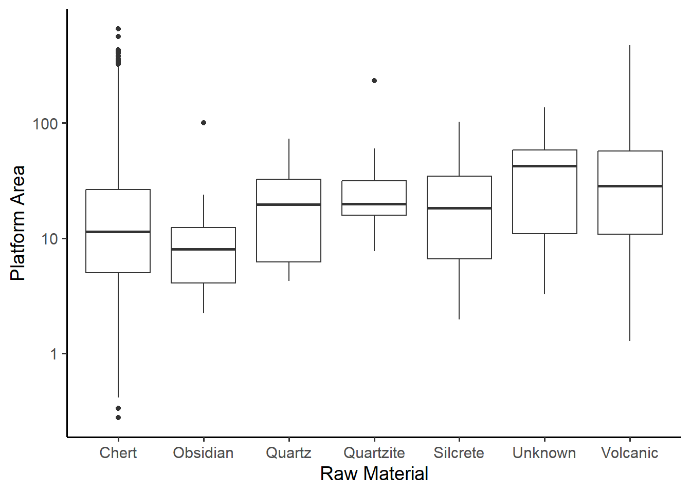
We now want to create a plot that shows the number of objects per material. First get the data.
material_data <- plat_area_data %>%
group_by(Material) %>%
count()Now create the plot using the geom_col() function.
ggplot(data = material_data) +
aes(x = Material,
y = n) +
geom_col() +
scale_y_log10() +
labs(x = "Raw Material",
y = "Number of Objects") +
theme_classic(base_size = 14)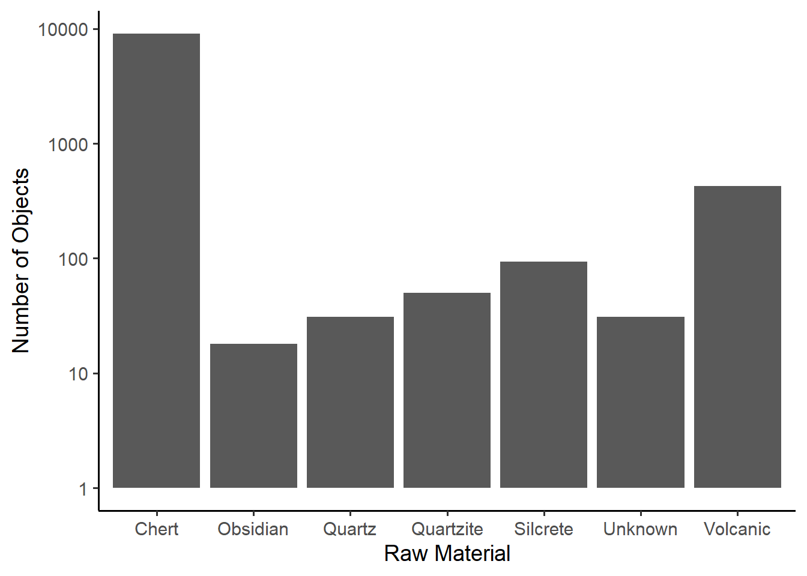
We can change the order of the columns using the reorder() function. We need to specify the column we want to reorder, and the column we want to order by. In this case, we want to order the Material column by the n column.
ggplot(data = material_data) +
aes(x = reorder(Material, n),
y = n) +
geom_col() +
scale_y_log10() +
labs(x = "Raw Material",
y = "Number of Objects") +
theme_classic(base_size = 14)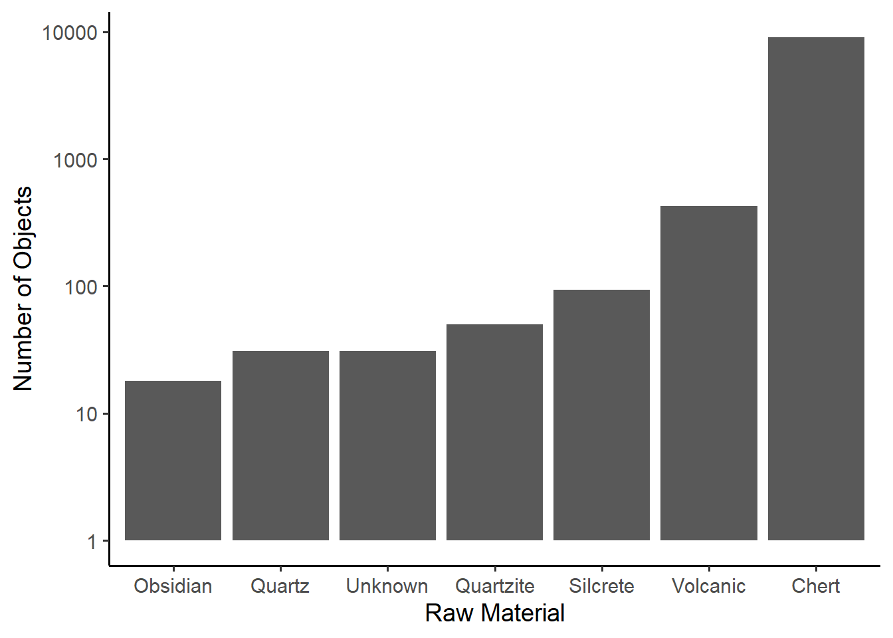
If we wanted to create a top 5 plot, we would first arrange the data by the n column, and then only keep the top 5 rows.
material_data <- material_data %>%
arrange(desc(n)) %>% # Note we arrange the rows in descending order, so the largest value is at the top
head(5)
ggplot(data = material_data) +
aes(x = reorder(Material, n), y = n) +
geom_col() +
scale_y_log10() +
labs(x = "Raw Material", y = "Number of Objects") +
theme_classic(base_size = 14)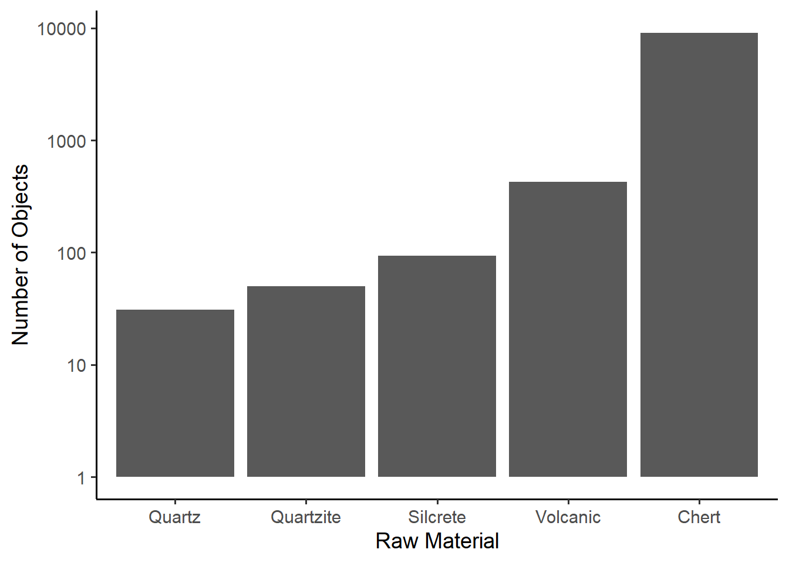
Now lets say we want to make a plot of the distributions of length of each object. We can either manually create each plot by filtering for each material, or we can use the facet_wrap() function.
ggplot(data = plat_area_data) +
aes(x = Length) +
geom_histogram() +
facet_wrap(~Material) +
labs(x = "Length (mm)",
y = "Number of Objects") +
theme_classic(base_size = 14)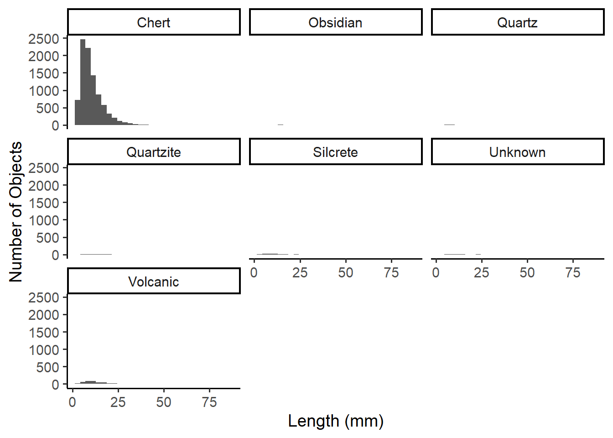
Due to the amount of chert items in the data, this is not very useful, but we can set the y axis to be free for each plot.
ggplot(data = plat_area_data) +
aes(x = Length) +
geom_histogram() +
facet_wrap(~Material, scales = "free_y") +
labs(x = "Length (mm)",
y = "Number of Objects") +
theme_classic(base_size = 14)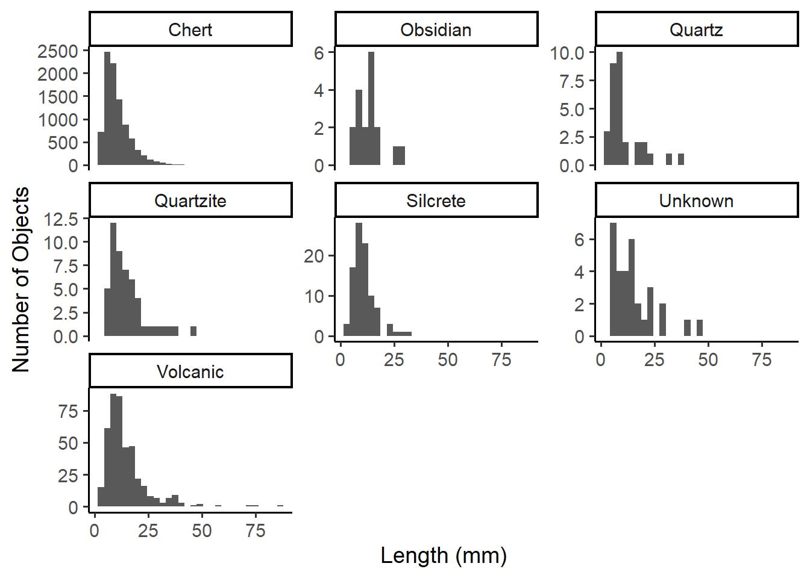
Homework assignments
Assignment 1
Create the plot below. This is the same plot as we made earlier in the workshop.

Assignment 2
Create the plot below of the most common colours. You will need to perform some data manipulation first.
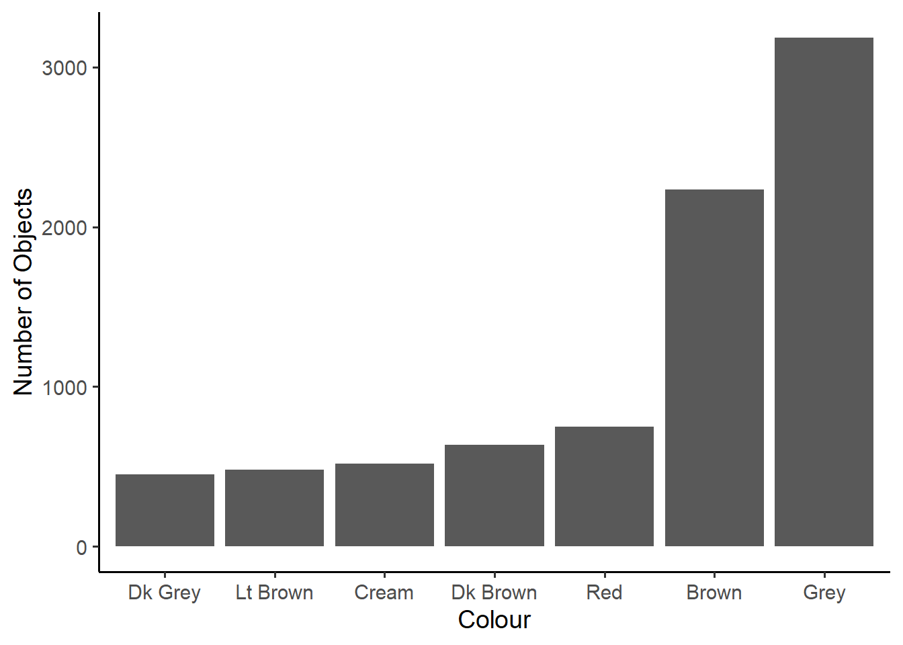
Assignment 3
What is the most common term in the dataset? Create a tibble that contains the term and the number of times it occurs.